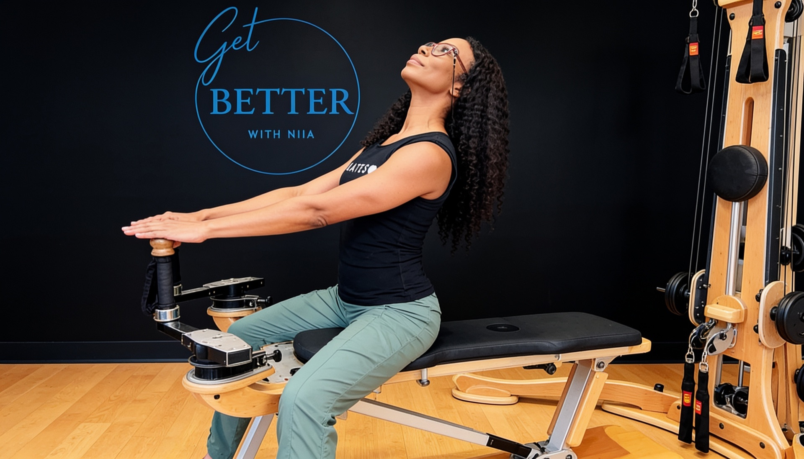
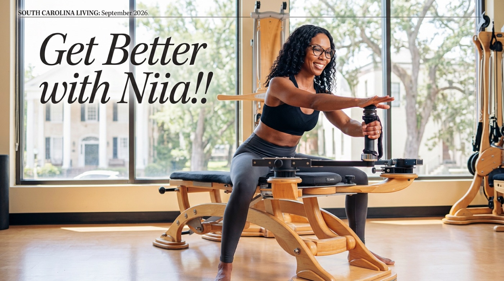

Gyrotonic Certified · Columbia, SC · betterwithniia.com
Educator. Movement practitioner.
Digital archivist. Musician.
Building the next chapter of Gyrotonic — one layer at a time.
Background
Dr. Nicole Bishop holds a Ph.D. from the University of Michigan and has built her career at the intersection of rigorous academic training and embodied practice. Certified in Gyrotonic under Justine, she brings the same depth she applies to scholarship to every movement session she teaches.
She founded Get Better with Niia in Columbia, SC — a studio and digital platform built around the belief that movement intelligence can be taught, archived, and shared in ways the field hasn't yet fully explored.
The Digital Work
Before anyone asked her to, Dr. Bishop built a digital archive of the full Gyrotonic method — a searchable lookup tool and a styled teaching document spanning all seven series and all seven progressions. These weren't class notes. They were built to last.
Fuzzy-search index of every exercise in the Gyrotonic curriculum — by series, progression, and keyword. JavaScript-built with Levenshtein distance matching and phonetic stemming.
Open Lookup → 02Fully styled digital reference covering Foundation Steps through Progression 7 — exercise grids, vocabulary, suppling principles, source citations. Print-ready.
Open eManual →Music for Movement
During certification, Dr. Bishop listened, recorded, and then composed — building original tracks around the rhythms and breath of Gyrotonic movement. Some carry energy. Some hold space. All of them move.


The Invitation
"The method is extraordinary. What it doesn't yet have is a digital presence that matches its depth. I've started building that — the archive, the tools, the music. I'd love to build it with you."
When a new chapter opens for Gyrotonic, the question isn't just who teaches it — it's who shapes how it's understood, accessed, and passed on. Dr. Bishop's background in education, her certification training, and her instinct toward documentation and artistry position her uniquely to contribute to exactly that work.
The tools already exist. The music already exists. The credential is earned. The question is what we build together next.
If you're shaping where Gyrotonic goes next — in curriculum, technology, or community — I want to be part of that conversation.
Get in Touch